Erdgeschoss
Wohnzimmer
Gemütliche Sofas vor der alten Steinwand, dazu ein Beamer mit Filmen für die Abende.
Ein Steinhaus im Landhausstil, eingebettet zwischen den Rebfeldern des Weinbaugebiets AOC Faugères. Mit Garten, Pool und Blick über die Weinberge bis zum Meer.
Bienvenue chez nous!Ich bin Sibylle. Über die letzten 20 Jahre haben mein Mann und ich uns hier in Caussiniojouls einen Lebenstraum verwirklicht. Das kleine Dorf liegt nördlich von Béziers, am Rand des Regionalparks Haut-Languedoc. Wann immer wir freie Momente fanden, haben wir an unserem Grundstück gearbeitet. So ist neben unserem Wohnhaus ein wundervolles Gästehaus entstanden, eingerichtet im Landhausstil mit marokkanischen Elementen.
Wir freuen uns, Sie hier zu empfangen, ob für aktive Sportferien, Kulturferien oder einfach zum Entspannen. Gerne geben wir Ihnen auch Tipps für die Gegend.
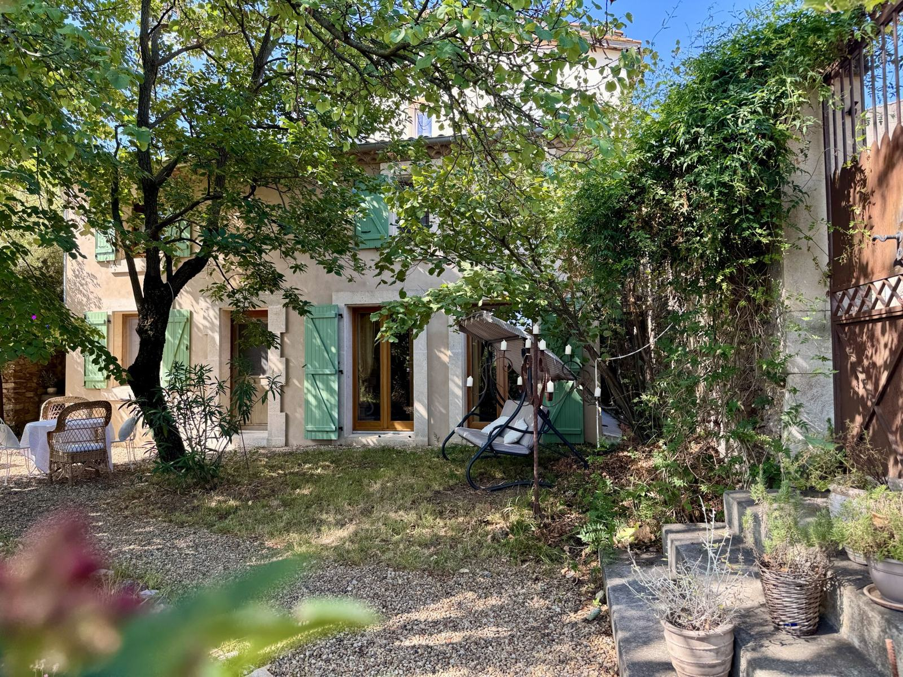
Unten wohnen, kochen und essen, oben zwei große Schlafzimmer unter den Holzbalken. Das Erdgeschoss ist klimatisiert.
Gemütliche Sofas vor der alten Steinwand, dazu ein Beamer mit Filmen für die Abende.

Offene Küche mit Backofen, zwei Kochplatten, Wasserkocher, Toaster und italienischer Kaffeekanne.
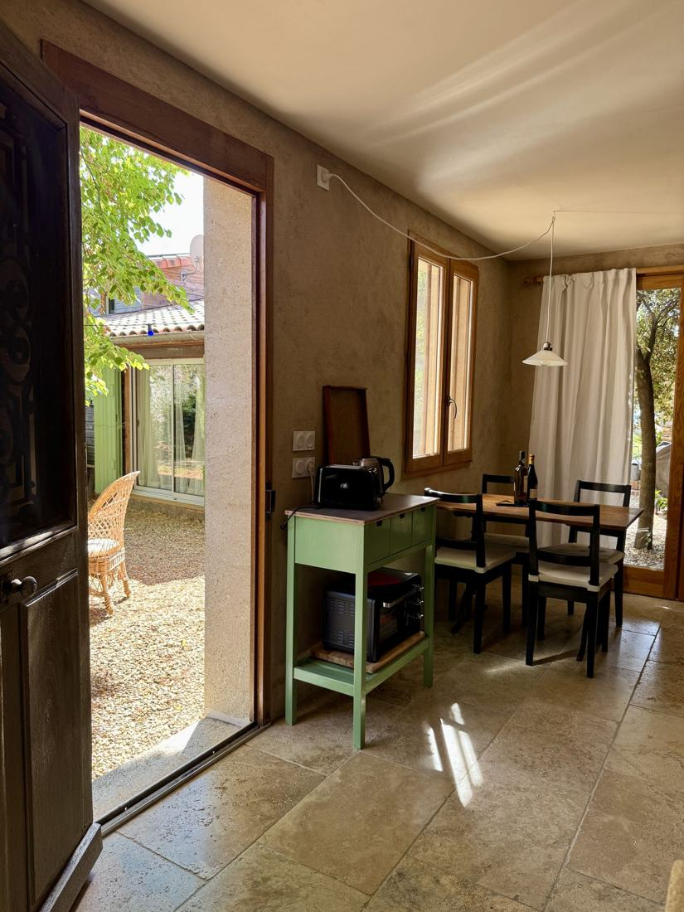
Gleich neben der Küche: eine gemütliche Sitzecke mit Holztisch für vier, hell und mit offener Tür zum Innenhof.

Bad mit offener Dusche, Waschbecken und WC.
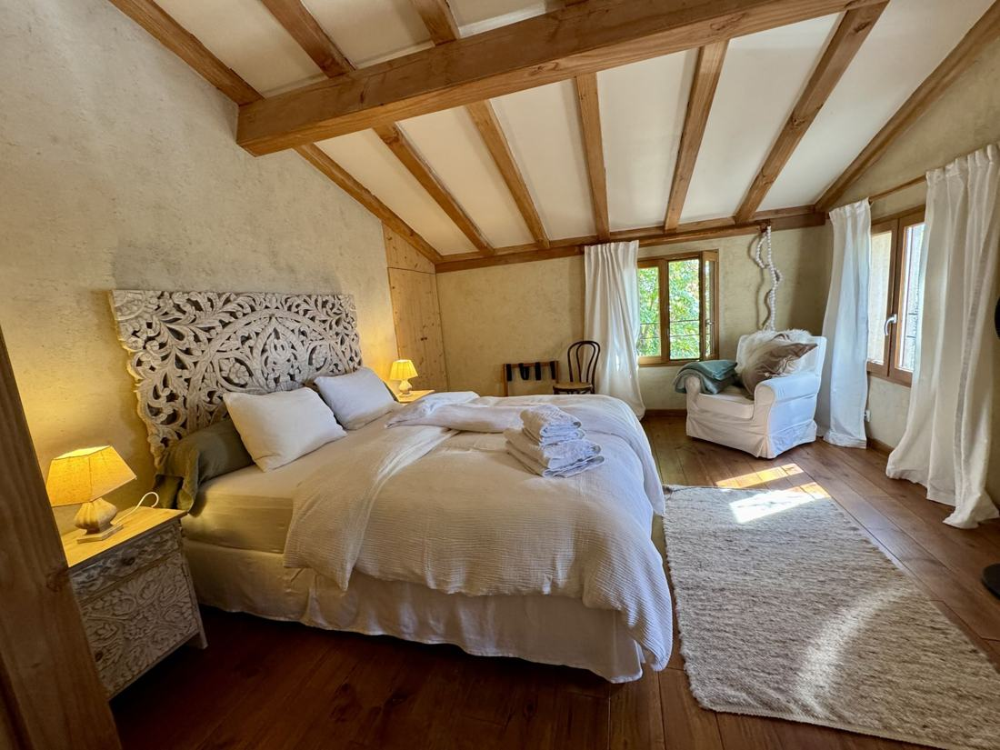
20 m², Doppelbett 160 × 200 cm, mit geschnitztem Kopfteil und Leseecke.
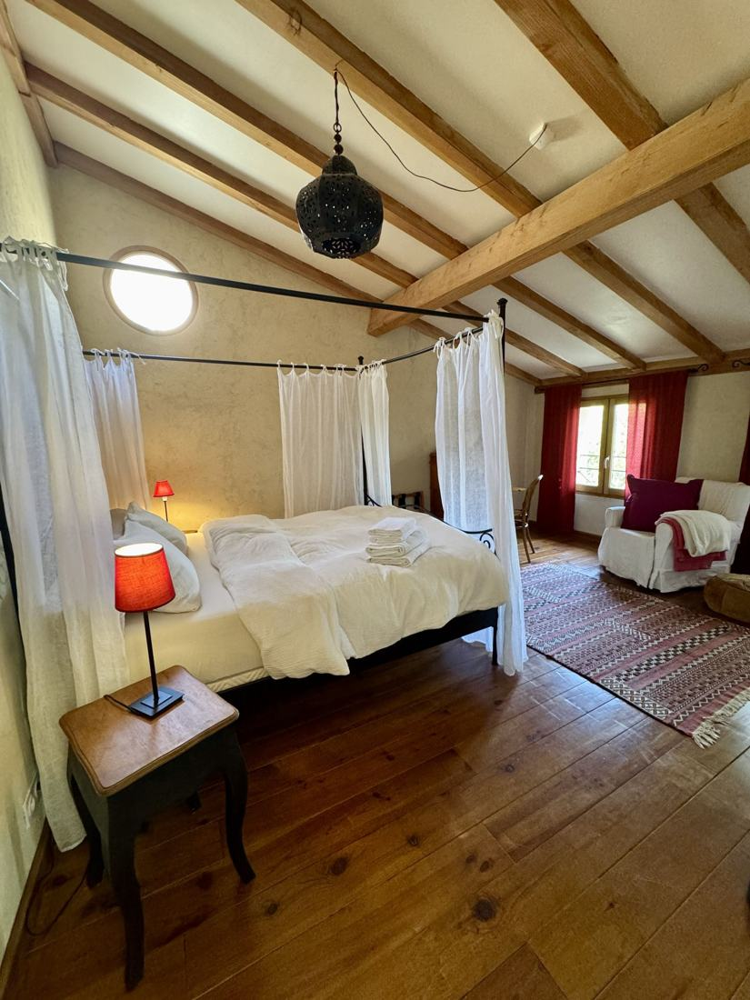
20 m², Himmelbett 180 × 200 cm und ein alter Sekretär.
Ein schattiger Platz unter dem Baum vor dem Haus, eine überdachte Terrasse mit großem Tisch und Grill und ein Pool von 10 × 5 m (1 bis 2,5 m tief), den sich die Gäste mit Sibylle und ihrem Mann teilen. Vom Pool reicht der Blick bis zum rund 40 km entfernten Mittelmeer.


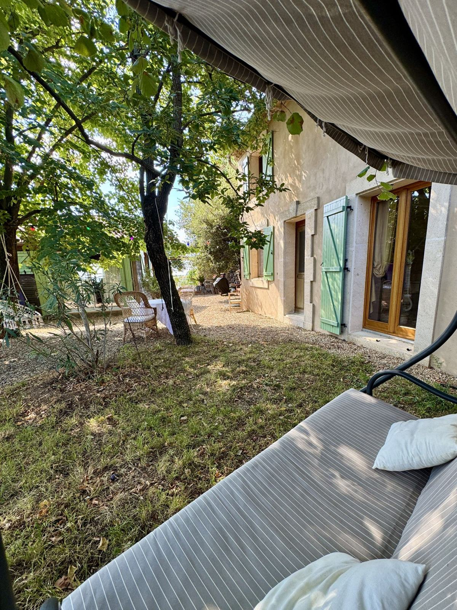
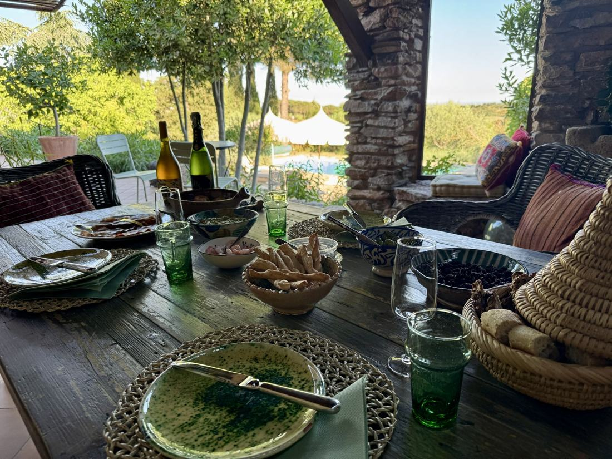
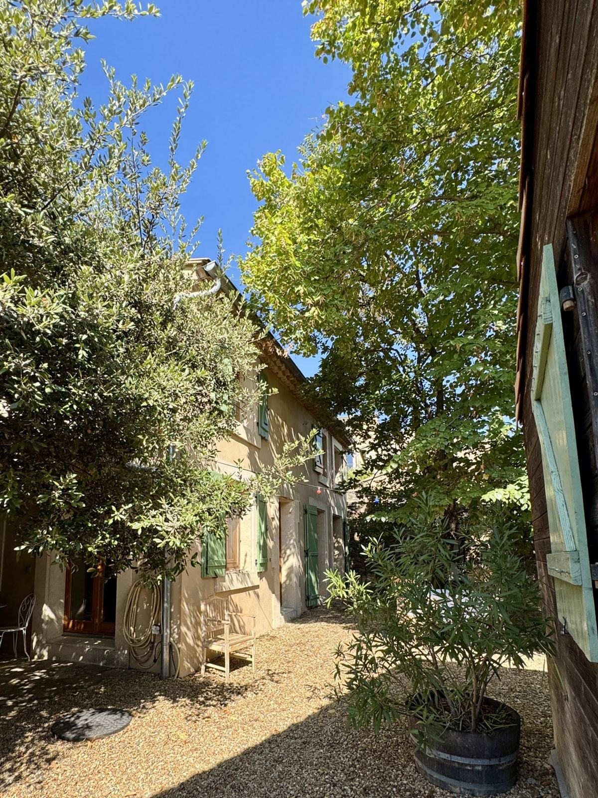

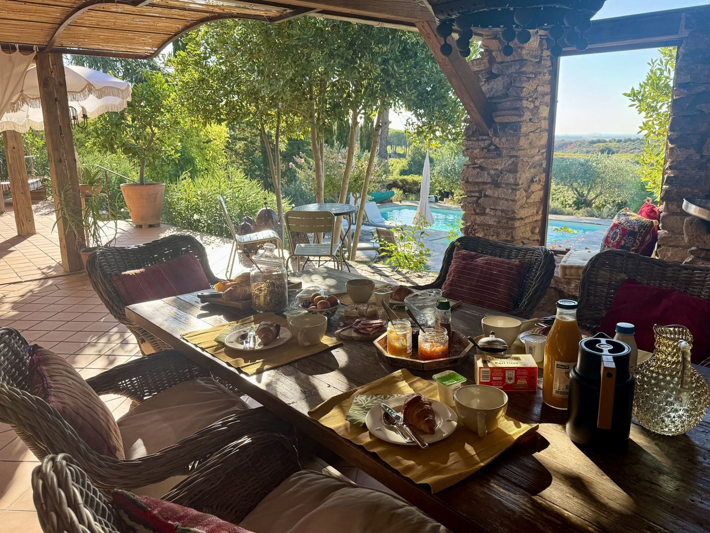
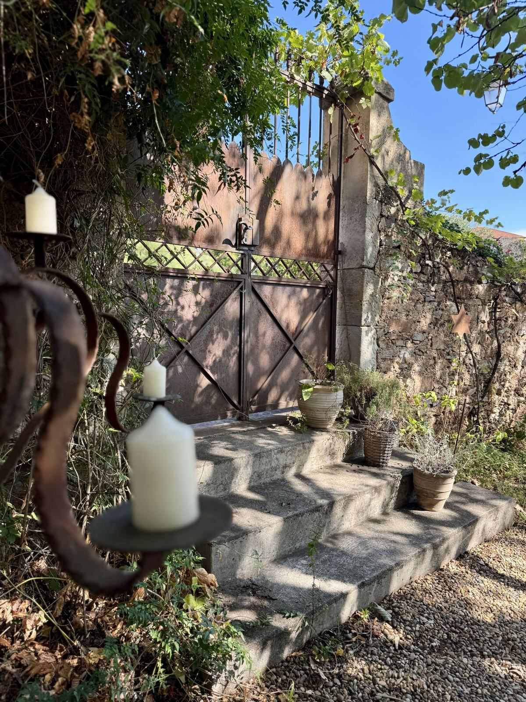

Zwischen Weinbergen, Flüssen und Meer: Städte, Strände und Museen sind in kurzer Fahrt erreichbar, Wanderwege beginnen direkt an der Haustür.
Entfernungen in Luftlinie, ungefähr
Freie Termine, Preise und die sichere Buchung finden Sie auf der Seite von Gîtes de France.
ab 805 € pro Woche Zu Gîtes de France →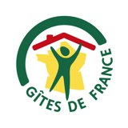
Anerkannt von Gîtes de France · Ref. 34G062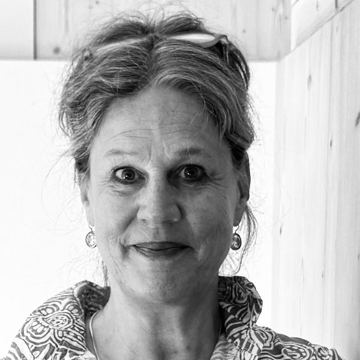
Fragen zum Haus, zur Anreise oder zu Ausflügen? Schreiben Sie Sibylle oder rufen Sie an, sie hilft gern.